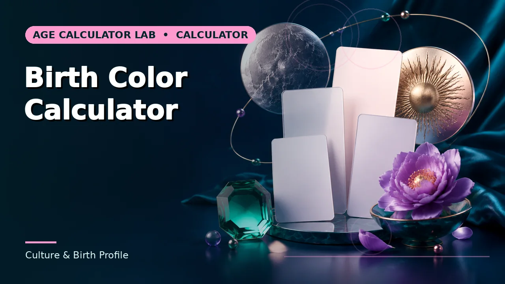
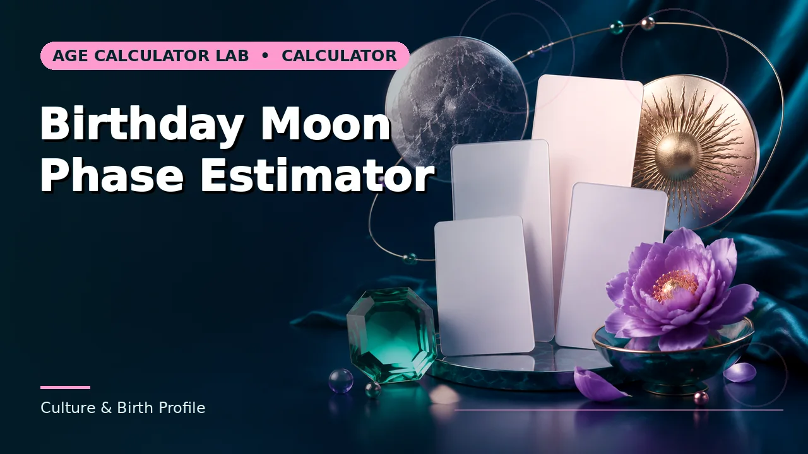
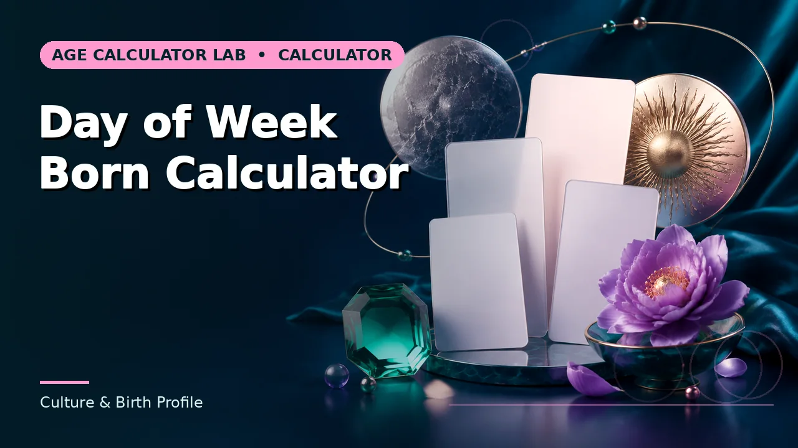
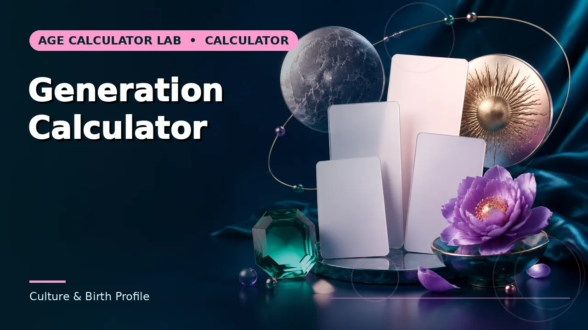
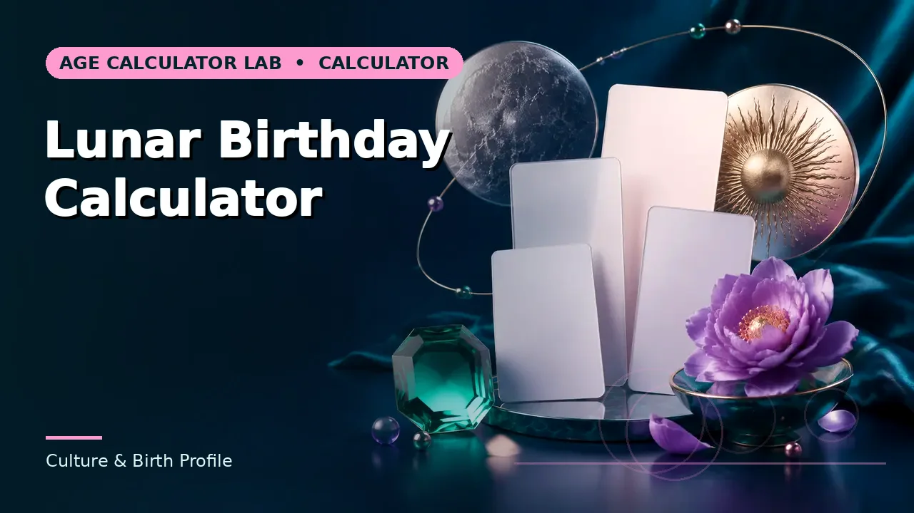

Culture & Birth Profile
Zodiac signs, birthstones, birth flowers, generations and numerology — cultural references, not measurements.

Zodiac Sign Calculator
Western zodiac sign associated with a birth month and day.

Chinese Zodiac Calculator
Chinese zodiac animal associated with a birth year.

Birthstone Calculator
Traditional birthstone associated with a birth month.

Birth Flower Calculator
Traditional birth flower associated with a birth month.

Birth Color Calculator
A recreational color association based on birth month.

Birth Season Calculator
Meteorological season associated with a birth month in the Northern Hemisphere.

Birth Month Facts Calculator
A compact recreational profile based on birth month.

Life Path Number Calculator
A recreational numerology life-path number from a birth date.

Birthday Moon Phase Estimator
An approximate lunar phase index for a birth date.

Day of Week Born Calculator
Weekday on which a person was born.

Generation Calculator
A broad generational label based on birth year.

Lunar Birthday Calculator
The approximate moon phase on a birth date and its position in the lunar cycle.
Guides for this category
Understand the conventions before the number goes into a record or a decision.
Browse the rest of the 161 calculators
Ten more groups covering assessments, pregnancy, work, dates and cultural references.